← Index · ← Previous · Next →
Authors: Mathieu Lizée, Zhijia Zhang, Baptiste Coquinot, Qian Yang, Lydéric Bocquet
Type: both · Category: other · PDF: https://arxiv.org/pdf/2605.00661v1
Analysis basis: full PDF text, analyzed in chunks
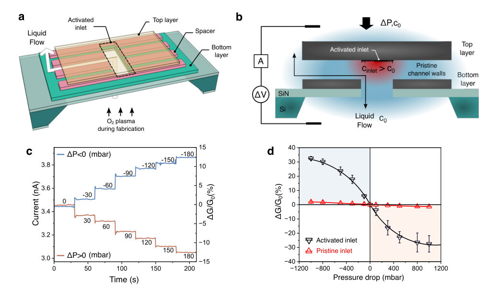
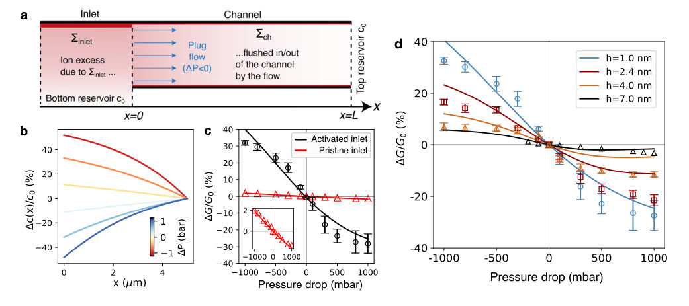
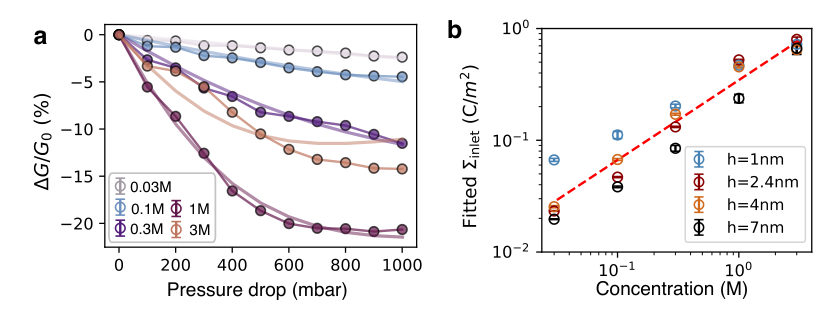
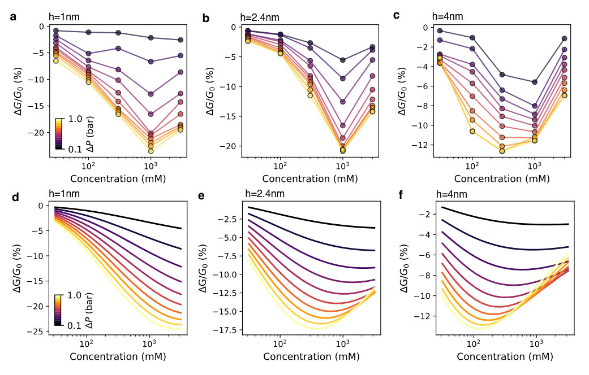
Summary. The researchers engineered a graphite-based nanofluidic device that changes its electrical conductance in response to pressure without any physical deformation of the channel. This is achieved by creating an asymmetric surface charge at the channel inlet, which allows pressure-driven flow to move ions into or out of the slit. This work provides a blueprint for designing bioinspired, solid-state pressure sensors.
Why it may be interesting. not directly relevant
Main problem. Developing artificial, strain-free mechanosensitive nanofluidic systems that mimic biological ion channels by achieving pressure-dependent conductance without structural deformation.
Main result. Demonstrated that asymmetric surface charging at a graphite nanoslit inlet enables a bipolar, pressure-sensitive ionic conductance response driven by the advection of excess ions.
Method. The study combines van der Waals assembly and plasma treatment for device fabrication with electrochemical measurements and a 1D electrohydrodynamic EDL-advection model.
Model / system. The physical system consists of 2D graphite nanoslits (height 1-7 nm) with an activated (highly charged) inlet, placed between reservoirs of aqueous KCl solution.
Key observables. Relative conductance change (delta G/G0), ionic current (I), streaming current (Istr), and ion concentration profiles.
Important parameters / regimes. Pressure drop (delta P), salt concentration (c0), channel height (h), surface charge density (Sigma), and slip length (b).
Assumptions / limitations. Assumes a 1D EDL-advection model, negligible channel wall deformation, large slip length (b >> h), and specific power-law scaling for surface charge regulation.
Figures summary. Fig 1 shows the experimental setup, pressure convention, and the bipolar conductance response in activated vs. pristine channels. Fig 2 illustrates the electrohydrodynamic model. Fig 3 and 4 present the concentration-dependent mechanosensitivity and the scaling of the response with channel height.
Paper structure. The paper introduces the concept of strain-free mechanosensitivity, describes the fabrication and experimental setup, presents the observed bipolar conductance response, provides a theoretical 1D model to explain the mechanism via ion advection, and analyzes the scaling of the effect with salt concentration and channel height.
Mechanosensitive ion transport plays a central role in enabling living systems to perceive and adapt to their environment through the deformation of soft, embedded ion channels. In this work, we demonstrate that ion transport within a two-dimensional graphite nanoslit can be rationally engineered to achieve a bipolar, pressure-sensitive response without any structural deformation. The mechanosensitivity arises from the selective charging of one channel inlet, which acts as a reversible source of mobile charge carriers. These excess-ions can then be advected in or out of the channel by the pressure-driven water flow, thereby modulating the ionic conductance. This mechanism is captured through a comprehensive electrohydrodynamic model that analytically accounts for coupled diffusion, convection, surface transport, diffusio-osmosis, and interfacial slippage, both inside and outside the nanoslit. The theoretical framework quantitatively reproduces the experimental data, showing that a simple surface charge pattern can give rise to complex, pressure-dependent conductance. These findings reveal how rich nonlinear couplings at the nanoscale can be harnessed to design adaptive, bioinspired nanofluidic systems, exemplified here by ionic pressure sensors.
Authors: Guillaume Lambard
Type: theory · Category: disordered systems and neural networks · PDF: https://arxiv.org/pdf/2605.00313v1
Analysis basis: full PDF text, analyzed in chunks
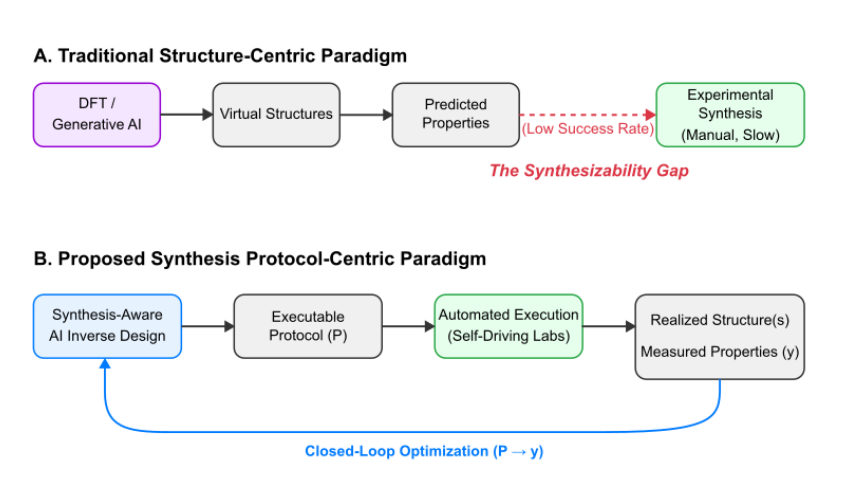
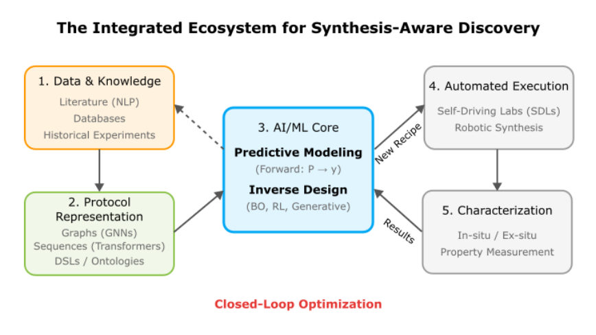
Summary. The paper argues that AI-driven materials discovery must move beyond predicting stable structures to predicting the actual synthesis recipes required to make them. By treating synthesis protocols as primary design variables, the author proposes a way to close the gap between computational predictions and experimental reality using autonomous laboratories.
Why it may be interesting. not directly relevant
Main problem. The 'synthesizability gap' in materials discovery, where AI models predict stable atomic structures but fail to provide actionable, experimentally feasible synthesis protocols.
Main result. The paper proposes a paradigm shift from a structure-centric (Structure -> Property) to a synthesis-first (Protocol -> Structure -> Property) framework to bridge the gap between virtual candidates and laboratory realization.
Method. A roadmap for integrating machine-readable synthesis protocols, generative/inverse-design models (VAEs, GANs, Diffusion), and closed-loop optimization via Self-Driving Laboratories (SDLs).
Model / system. The framework focuses on inorganic and solid-state materials (e.g., semiconductors, batteries, MOFs) and models the causal chain P -> X -> y, where P is the synthesis protocol, X is the resulting structure/phase, and y is the final property.
Key observables. Intermediate structural phases, morphology, defects, and final material properties like ionic conductivity or catalytic activity.
Important parameters / regimes. Synthesis parameters (temperature, pressure, pH, time, precursors) and sustainability metrics (E-factor, energy footprint).
Assumptions / limitations. The effectiveness of the paradigm shift relies on the availability of standardized, machine-readable protocols and the ability to scale high-quality, multi-modal datasets.
Figures summary. Figure 1 compares the conventional structure-centric workflow with the proposed protocol-centric workflow that closes the synthesizability gap. Figure 2 illustrates an integrated ecosystem linking data sources, AI cores, and automated execution.
Paper structure. The paper identifies the synthesizability gap, proposes a new P->X->y framework, outlines methodological pillars (representation, generative modeling, and closed-loop integration), provides case studies across material domains, and concludes with future challenges and a vision for 2035.
The current structure-centric paradigm in artificial intelligence (AI)-driven materials discovery, despite delivering thousands of candidate structures, is stalling at a critical barrier: the synthesizability gap. We argue that closing this gap demands a pivot to a synthesis-first paradigm in which executable synthesis protocols, not just atomic configurations, are treated as primary design variables. We outline a roadmap built on three pillars: (i) representing synthesis procedures as machine-readable protocols, (ii) deploying generative and inverse-design models to propose actionable reaction pathways and recipes, and (iii) integrating closed-loop optimisation to refine protocols against experimental realities and sustainability constraints. Framed in terms of the causal backbone P->X->y from protocol P to structure X and properties y, this perspective sets out methodological building blocks, standards needs and self-driving laboratory (SDL) integration strategies to accelerate reproducible, data-first materials discovery.
Authors: Steven R. Spurgeon, Milad Abolhasani, Frederick Baddour, Ryan B. Comes, Vinayak P. Dravid, Hilary Egan, Patrick Emami, Robert W. Epps, Davi M. Fébba, Renae Gannon, E. Ashley Gaulding, Ayana Ghosh, Kenny Gruchalla, Grace Guinan, Taro Hitosugi, Michael Holden, Sergei V. Kalinin, Yangang Liang, John S. Mangum, Matthew J. Olszta, Nathaniel H. Park, Axel Palmstrom, Michelle A. Smeaton, Brooks Tellekamp, Nicholas E. Thornburg, Raymond R. Unocic, Daniela Ushizima, Rama K. Vasudevan, Robert White, Andrew Young, Andriy Zakutayev
Type: both · Category: other · PDF: https://arxiv.org/pdf/2605.00639v1
Analysis basis: full PDF text, analyzed in chunks
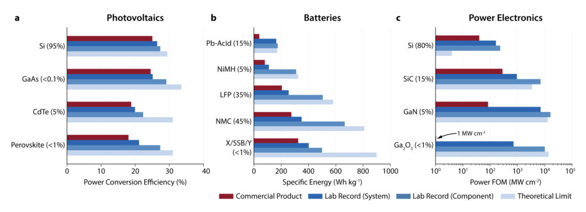
Summary. This paper proposes a new strategy for autonomous materials discovery called 'Born-Qualified,' which aims to bridge the gap between lab breakthroughs and industrial use. By embedding manufacturing, cost, and durability constraints into the AI-driven discovery loop from the start, the framework seeks to prevent the development of high-performance materials that are impossible to scale. This approach could significantly accelerate the deployment of next-generation energy and electronic technologies.
Why it may be interesting. not directly relevant
Main problem. A significant 'valley of death' exists between the laboratory discovery of advanced materials and their industrial deployment due to a mismatch where optimization prioritizes lab-scale performance over manufacturability, cost, and durability.
Main result. The authors propose the 'Born-Qualified' framework, a new paradigm for autonomous science that integrates manufacturing, cost, and stability constraints directly into the initial discovery loop.
Method. The framework utilizes four pillars: multi-objective metrics, causal models, modular infrastructure, and the integration of manufacturing into the discovery loop, employing AI/ML, LLMs, and closed-loop automation.
Model / system. The framework is applied to various energy and electronic material systems, including lithium-sulfur and lithium-ion batteries, photovoltaics (GaAs, Perovskite, CdTe), and power electronics (Si, SiC, GaN, Diamond).
Key observables. Laboratory metrics (catalytic activity, ionic conductivity, band gap, specific capacity, ZT) and industrial metrics (scalability, cost-effectiveness, durability, and process compatibility).
Important parameters / regimes. Performance vs. deployability trade-offs, scale-up from milligrams to industrial quantities, and the transition from laboratory-scale to pilot-scale manufacturing.
Assumptions / limitations. The framework assumes that integrating manufacturing constraints early can overcome the limitations of current sequential discovery models and that AI-driven automation can handle multi-objective optimization.
Figures summary. Figure 1 correlates the performance gap between lab records and commercial products with market penetration; Figure 2 contrasts the traditional sequential discovery approach with the proposed continuous 'Born-Qualified' approach.
Paper structure. The paper identifies the discovery-deployment gap, proposes the 'Born-Qualified' strategy via four enabling pillars, details the necessary experimental and computational infrastructure, and provides case studies in power electronics and energy storage.
Autonomous science is transforming how we discover materials and chemical systems for advanced energy technologies. However, many initially promising systems never reach deployment. This "valley of death" stems from optimization that prioritizes laboratory metrics over industrial viability. We propose a new strategy: "born-qualified" autonomous development, which embeds manufacturability, cost, and durability constraints from the outset. This approach is enabled by four pillars, including the development of multi-objective metrics, causal models, a modular infrastructure, and embedding manufacturing in the discovery loop. Realizing this vision will require sustained, community-wide commitment, but the potential return on that investment is commensurate with the scale of the challenge.
Authors: Jiahang Li, Suhang Li, Chong Yan, Jiajun Yu, Qinzhuang Liu, Ruo-Ya Wang, Dongwei Ma
Type: theory · Category: disordered systems and neural networks · PDF: https://arxiv.org/pdf/2605.00609v1
Analysis basis: full PDF text, analyzed in chunks
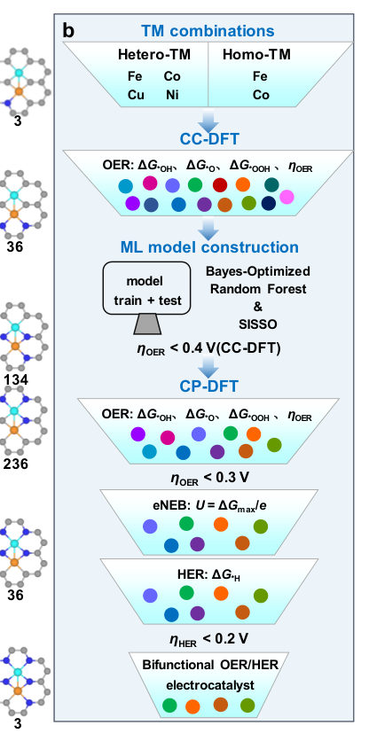
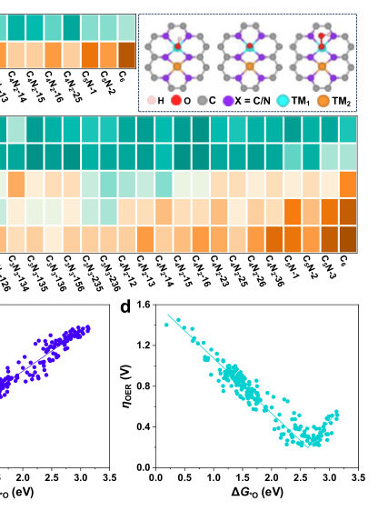
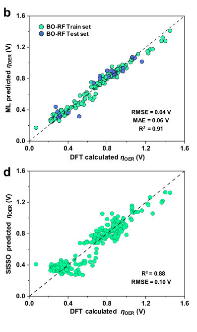
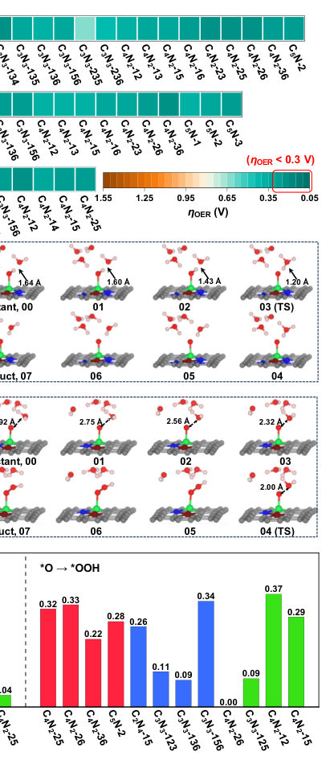
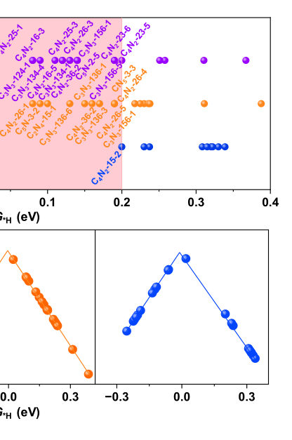
Summary. This paper uses a combination of first-principles calculations and machine learning to engineer the coordination environment of dual-atom catalysts on graphene. By tuning the carbon and nitrogen coordination, the researchers successfully optimized both the oxygen and hydrogen evolution reactions, providing a strategy for designing high-performance, non-noble metal catalysts.
Why it may be interesting. not directly relevant
Main problem. The challenge of designing efficient, low-cost, bifunctional electrocatalysts for overall water splitting in acidic media by replacing noble metals with transition-metal dual-atom catalysts (DACs).
Main result. The study identified 22 highly active bifunctional DACs (e.g., CoNi, CoCu, Co2) with mixed C/N coordination that exhibit OER overpotentials comparable to IrO2 and low PCET activation barriers.
Method. A three-step screening strategy combining constant-charge and constant-potential DFT with kinetic analysis of PCET, integrated with machine learning (Bayesian optimization and SISSO) to identify structure-performance descriptors.
Model / system. Graphene-supported dual-atom catalysts (TM1TM2-C6-xNx) where TM represents 3d transition metals (Fe, Co, Ni, Cu) and the coordination environment is tuned by varying C/N ratios.
Key observables. OER overpotential (eta_OER), PCET activation barriers (Ea), hydrogen adsorption free energy (deltaG*H), and d-band center (epsilon_d).
Important parameters / regimes. Acidic conditions (pH = 1), transition metal species (Fe, Co, Ni, Cu), and C/N coordination ratios.
Assumptions / limitations. The study focuses specifically on the regime of acidic overall water splitting and uses implicit solvation models to represent the electrochemical environment.
Figures summary. The figures likely present the library of 228 structures, the screening results for OER activity, the identification of 24 active candidates, and machine learning-derived descriptors and structure-performance relationships.
Paper structure. Introduction to water splitting challenges; construction of a DAC library; DFT-based screening for OER; kinetic analysis of PCET; machine learning for descriptor identification; evaluation of HER activity; and discussion of the electronic mechanism of bifunctionality.
The rational design of bifunctional electrocatalysts for the hydrogen evolution reaction (HER) and oxygen evolution reaction (OER) is essential for achieving efficient and cost-effective overall water splitting. Atomically dispersed transition-metal catalysts, including single-atom catalysts and dual-atom catalysts (DACs), have emerged as a prominent class of heterogeneous catalysts, in which coordination engineering plays a decisive role in tuning catalytic performance. Herein, we explore coordination-engineered bifunctional overall water splitting electrocatalysts using graphene-supported DACs (TM1TM2-C6-xNx) as model systems. By tuning C/N coordination and dual-metal combinations (Fe, Co, Ni, and Cu), a library of 228 structures was constructed. A three-step screening strategy, combining constant-charge and constant-potential density functional theory with kinetic analysis of proton-coupled electron transfer (PCET), identifies 24 highly active candidates (TM1TM2 = CoNi, CoCu and Co2) with mixed C/N coordination for OER. These catalysts exhibit overpotentials comparable to that of IrO2 and low PCET barriers (lower than 0.40 eV), among which 22 also show high HER activity. Machine learning reveals clear coordination-dependent structure-performance relationships. Such bifunctionality arises from coordination engineering that enables the simultaneous optimization of OER intermediate adsorption and the hydrogen binding strength for HER. This work establishes coordination engineering as an effective strategy for designing high-performance bifunctional dual-atom electrocatalysts for overall water splitting.
Authors: Samara M. da Silva, R. F. Silva, A. Nonato, Paulo Villis, Rodrigo S. Corrêa, L. C. Gómez-Aguirre, C. W. A. Paschoal, Pedro I. S. Maia, Benedicto A. V. Lima
Type: experiment · Category: other · PDF: https://arxiv.org/pdf/2605.00599v1
Analysis basis: full PDF text, analyzed in chunks
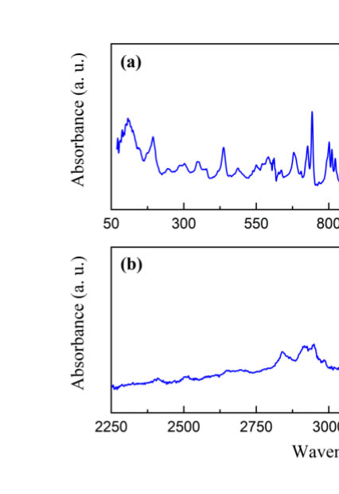
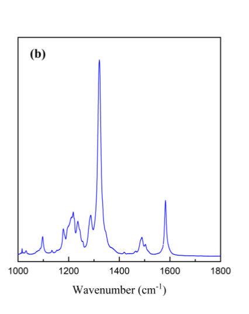
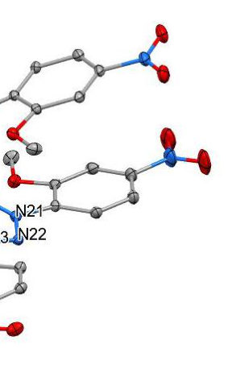
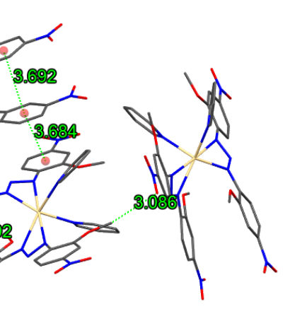
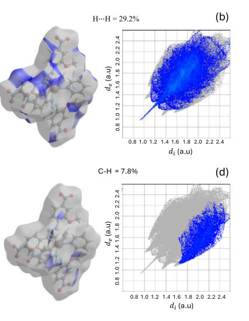
Summary. The study demonstrates that coordinating a Cd(II) ion to a triazene ligand allows for the tuning of red-region luminescence. This is achieved through structural changes that modify ligand-centered electronic transitions, making the complex a candidate for red-emitting optoelectronic devices.
Why it may be interesting. not directly relevant
Main problem. Investigating how the coordination of a Cd(II) metal center to a triazene ligand modifies the electronic structure and tunes the red emission for potential LED applications.
Main result. The coordination of Cd(II) induces structural and electronic perturbations that enhance red emission (500-850 nm) and decrease the optical band gap to 1.83 eV.
Method. Chemical synthesis followed by X-ray single-crystal diffraction, Hirshfeld surface analysis, Raman and IR spectroscopy, and UV-Vis/Photoluminescence spectroscopy.
Model / system. An organometallic complex, cis-[Cd(Tz)2(py)2], featuring a distorted octahedral Cd(II) center coordinated by two triazene (Tz) ligands and two pyridine (py) ligands.
Key observables. Optical band gap (1.83 eV), emission wavelength (500-850 nm), CIE chromaticity coordinates, and vibrational frequency shifts.
Important parameters / regimes. Direct optical band gap of 1.83 eV, d10 electronic configuration of Cd(II), and CCT shift from 1974 K to 2325 K.
Assumptions / limitations. The d10 configuration of Cd(II) suppresses metal-centered and charge-transfer transitions, leaving ligand-centered transitions as the primary emission source.
Figures summary. Supplementary figures show normalized vibrational spectra (IR/Raman), Hirshfeld surface plots for intermolecular contacts, Tauc plots for bandgap determination, and deconvolution of photoluminescence emission spectra.
Paper structure. The paper describes the synthesis of the complex, followed by structural characterization via X-ray diffraction and Hirshfeld analysis, vibrational analysis using IR/Raman, and optical property investigation via UV-Vis and photoluminescence.
Organic--inorganic complexes are promising materials for light-emitting applications. Here, we report a new organometallic complex, cis-[Cd(Tz)$_2$(py)$_2$], featuring a distorted octahedral Cd(II) coordination environment. IR and Raman spectroscopy reveal pronounced coordination-induced changes, particularly in the Raman response of the triazene moiety, indicating electronic and structural perturbation upon Cd(II) complexation. Hirshfeld surface analysis shows that the crystal packing is mainly governed by H$\cdots$H, O$\cdots$H/H$\cdots$O, and C$\cdots$H/H$\cdots$C contacts, whereas $π$--$π$ stacking interactions contribute modestly. Solid-state UV--Vis spectroscopy reveals broad absorption from $\sim$700 to 200 nm and a direct optical band gap of 1.83 eV, indicating semiconductor-like behavior. Photoluminescence measurements show a broad emission band at 500--850 nm with enhanced red contribution upon coordination. The emission is mainly assigned to ligand-centered transitions ($π\rightarrow π^*$ and $n \rightarrow π^*$), consistent with the $d^{10}$ configuration of Cd(II), which suppresses metal-centered and charge-transfer processes. The CIE chromaticity coordinates confirm warm emission, highlighting the potential of cis-[Cd(Tz)$_2$(py)$_2$] for red-emitting optoelectronic applications.
Authors: Nir Goldman, Artem Samtsevych, Chiara Panosetti
Type: theory · Category: strongly correlated electrons · PDF: https://arxiv.org/pdf/2605.00802v1
Analysis basis: full PDF text, analyzed in chunks
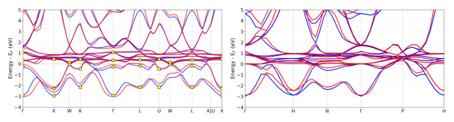
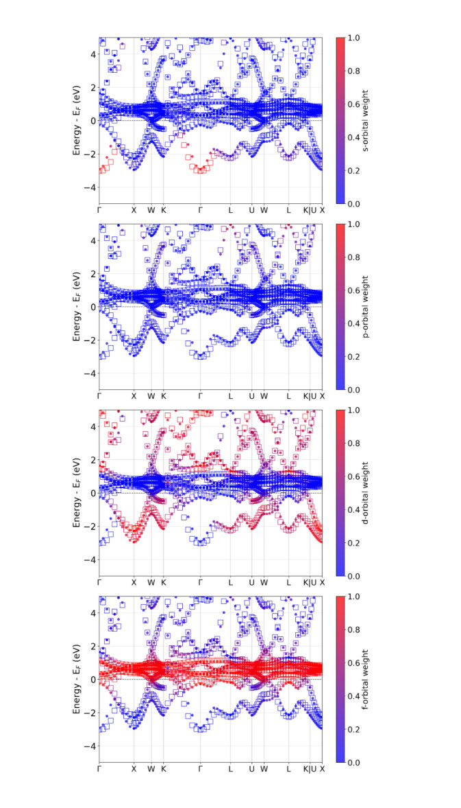
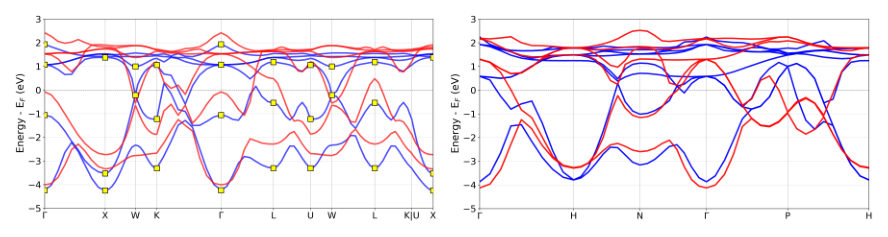
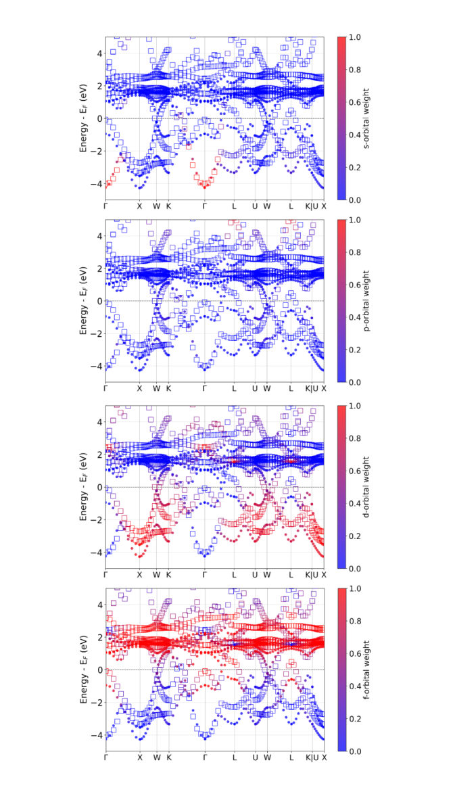
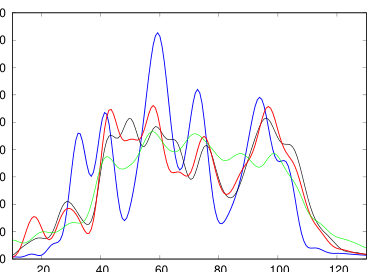
Summary. The researchers created a highly efficient machine-learning-enhanced tight-binding model to study cerium, a material with complex f-electron interactions. The model accurately reproduces the electronic and vibrational properties of various cerium phases at a fraction of the computational cost of traditional DFT. This allows for much larger-scale simulations of lanthanide-based materials.
Why it may be interesting. not directly relevant
Main problem. Developing a computationally efficient method to accurately simulate the complex f-electron physics and phase stability of cerium allotropes, which are too expensive for standard hybrid-functional DFT.
Main result. The developed DFTB/ChIMES model achieves a 100x increase in computational efficiency over DFT while accurately predicting band structures, phase energetic ordering, and vibrational density of states for various cerium polymorphs.
Method. A hybrid approach combining Density Functional Tight Binding (DFTB) with the ChIMES machine-learning formalism to determine the many-body repulsive energy term.
Model / system. The system consists of cerium (Ce) allotropes (alpha, beta, and delta phases). The model uses a DFTB Hamiltonian with Woods-Saxon type electronic confining potentials and a ChIMES-based many-body expansion (2B, 3B, and 4B) for the repulsive energy.
Key observables. Electronic band structure (topology and dispersion), orbital projections (s, p, d, f), phase stability (energetic ordering), nearest neighbor distances, and vibrational density of states (VDOS).
Important parameters / regimes. Hubbard U values (optimized at 0.36 au), Woods-Saxon confinement parameters (r0, a, W), and ChIMES polynomial orders (up to 12).
Assumptions / limitations. ChIMES coefficients are assumed to be permutationally invariant; stress tensor components were omitted from the ChIMES optimization in this specific work.
Figures summary. Figure 1 compares DFT and DFTB-PBE band structures for fcc and bcc Ce; Figure 2 shows orbital projections for alpha-Ce; Figures 3 and 4 present DFTB-PBE0 band structures and orbital projections.
Paper structure. The paper introduces the problem of f-electron simulation, describes the development of the DFTB/ChIMES model and its optimization strategy, presents validation against DFT for electronic and structural properties, and discusses the efficiency and transferability of the model.
We have developed Density Functional Tight Binding (DFTB) models for cerium that accurately predict both the electronic band structure and energetic ordering of different allotropes. We show that global optimization of the electronic confining potentials minimize the errors in the predicted Kohn-Sham energies while facilitating determination of a many-body repulsive energy. Our results illustrate the ability of DFTB to accurately reproduce complex f-electron interactions for multiple phases while leveraging minimal Density Functional Theory data.
Authors: Jiří Ryjáček, Leonard Hlodák, Jiří Liška, Jan Pinc, Tomáš Herma, Karel Tesař
Type: experiment · Category: other · PDF: https://arxiv.org/pdf/2605.00221v1
Analysis basis: full PDF text, analyzed in chunks
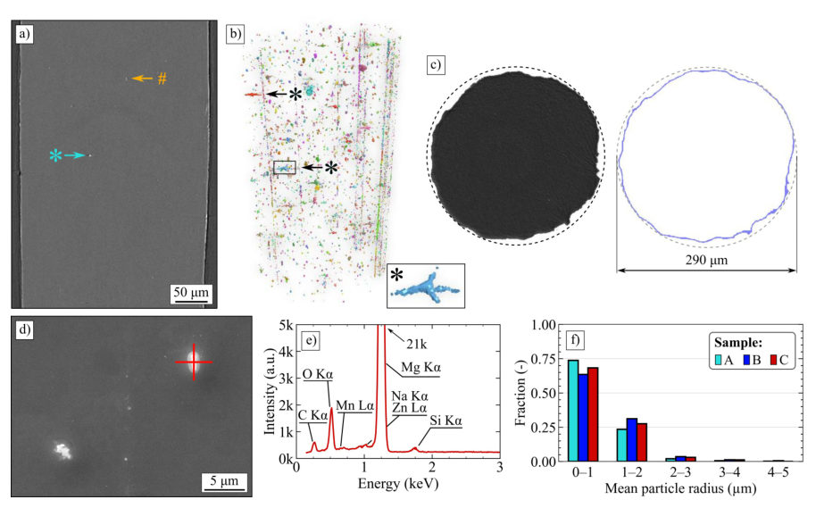
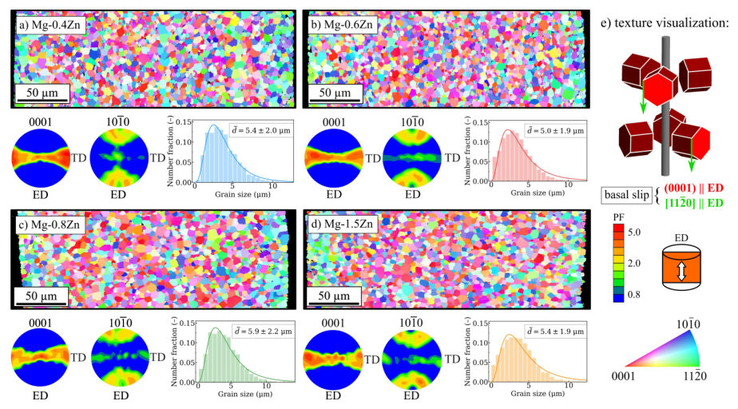
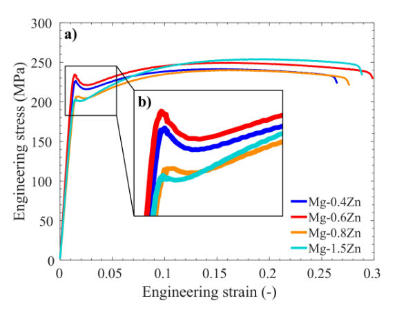
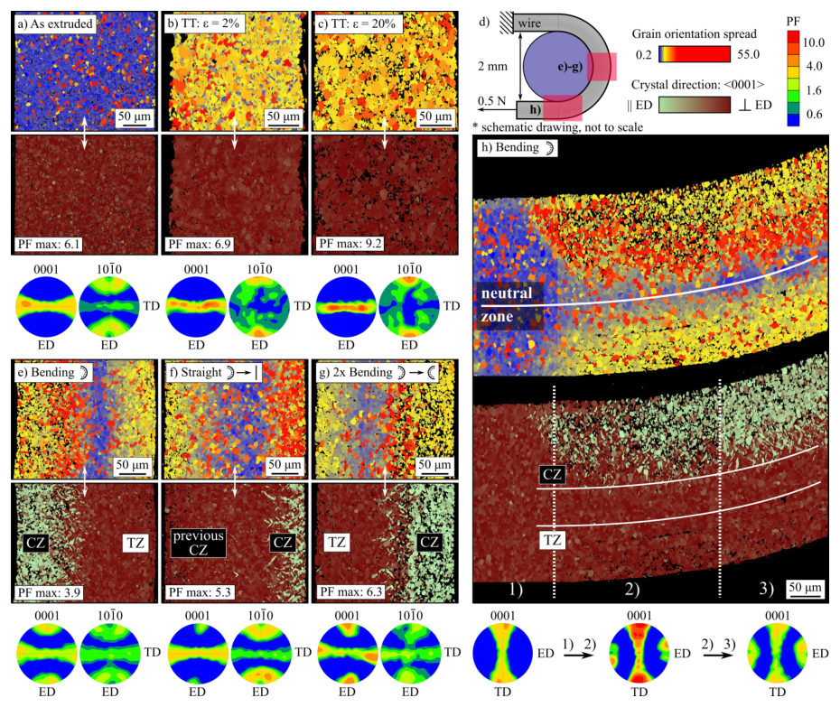
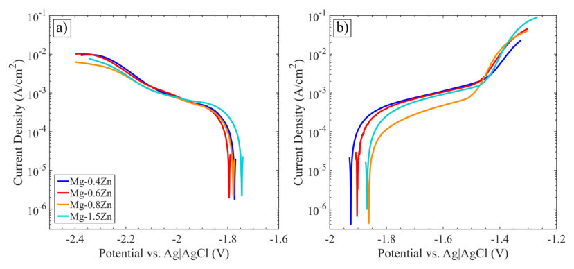
Summary. This study evaluates dilute Mg-Zn alloys for use in biodegradable bone fixation devices. It demonstrates that while Zn content has a limited effect on grain size and strength, it can influence strain hardening and that the choice of physiological medium significantly impacts the degradation rate and mechanical integrity of the wires.
Why it may be interesting. not directly relevant
Main problem. Investigating the influence of dilute Zn alloying (0.4 to 1.5 wt.%) on the microstructure, mechanical performance, and degradation behavior of extruded Mg wires for use as biodegradable medical implants.
Main result. The alloys maintain similar grain sizes and mechanical strength, but higher Zn content enhances strain hardening by activating non-basal slip; degradation is rapid in SBF but more controlled in DMEM+FBS media.
Method. Single-step direct hot extrusion followed by microstructural characterization (EBSD, SEM, micro-CT), mechanical testing (tensile and bending), and in vitro degradation studies in SBF and DMEM+FBS.
Model / system. Thin-walled (290-300 um diameter) extruded Mg-xZn alloy wires (x = 0.4, 0.6, 0.8, 1.5 wt.%) intended for resorbable orthopedic applications.
Key observables. Grain size, ultimate tensile strength, elongation, 0.2% proof stress, corrosion rate, corrosion product composition (HA, brucite), and twinning/detwinning-induced plasticity.
Important parameters / regimes. Zn concentration (0.4-1.5 wt.%), extrusion temperature (300 C), extrusion ratio (1:400), and immersion time (up to 7 days).
Assumptions / limitations. The effective surface area for corrosion calculation is assumed to be a smooth cylinder, though micro-CT suggests a larger actual area due to extrusion grooves.
Figures summary. Stress-strain curves showing post-yield stress drops; EBSD maps (GOS, PF, IPF) showing texture evolution and twinning; electrochemical polarization curves; and SEM/XRD images showing the evolution of corrosion products like hydroxyapatite.
Paper structure. The paper introduces the biomedical motivation, details the alloy processing and characterization methods, presents microstructural and mechanical results, analyzes degradation behavior in different media, and concludes with the suitability of the platform for implants.
Dilute Mg-Zn wires are of great interest for biodegradable small-bone fixation, as magnesium degradation can support bone-related processes, while low zinc additions may provide biological benefits without compromising biocompatibility. In this work, the influence of Zn content below the room-temperature solubility limit was assessed in Mg-Zn wires intended for resorbable implant applications. Mg-0.4Zn, Mg-0.6Zn, Mg-0.8Zn, and Mg-1.5Zn alloys were processed by single-step direct hot extrusion into thin wires and characterized by correlative microstructural analysis, tensile testing, bending experiments, and in vitro degradation. All compositions achieved a recrystallized fine equiaxed grain size of 5.0-5.9 um and exhibited ultimate tensile strengths of 246-256 MPa with elongations of 23-28 %. In these thin wires, Zn content had only a limited effect on grain size, tensile properties, and bending behavior, although lower-Zn alloys showed a pronounced sharp yield point. Bending was governed mainly by extrusion texture and preserved reversible plasticity through twinning and detwinning. Simulated body fluid caused rapid localized degradation and loss of mechanical integrity within 7 days, while the biologically more relevant DMEM-based medium better reflected the expected in vivo response. Together, these findings support dilute Mg-Zn wires as a simple material platform for the development of future resorbable bone fixation devices.
Authors: Thakurdas Mahata, Anirban Chatterjee, Ameeya Kumar Nayak
Type: theory · Category: other · PDF: https://arxiv.org/pdf/2605.00653v1
Analysis basis: full PDF text, analyzed in chunks
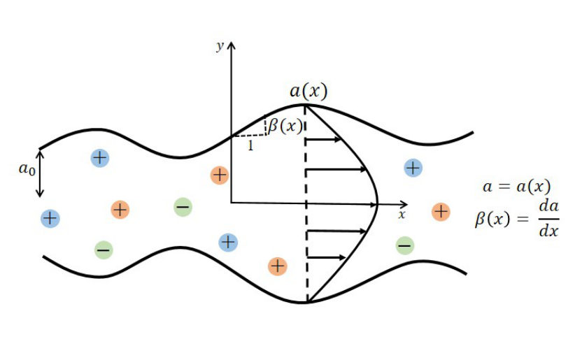
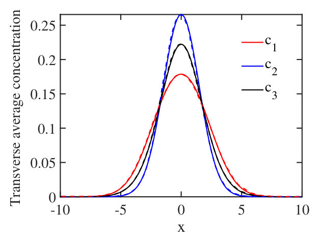
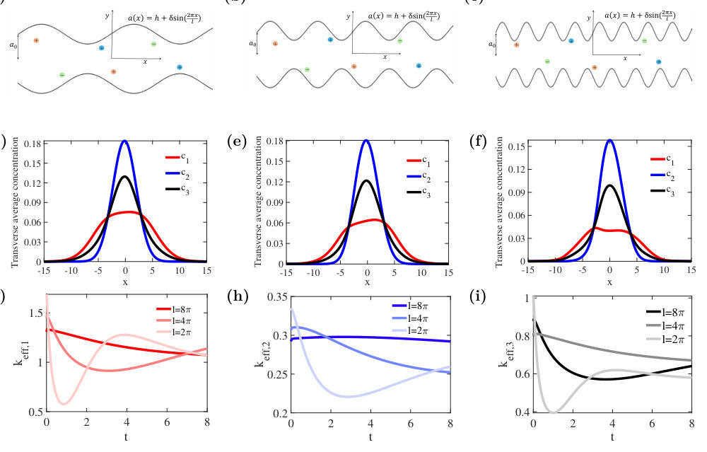
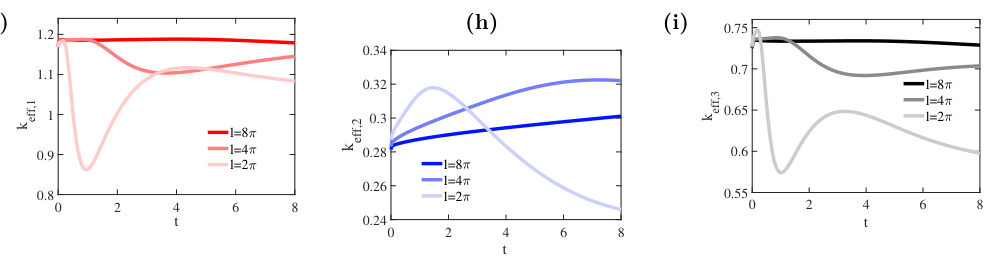
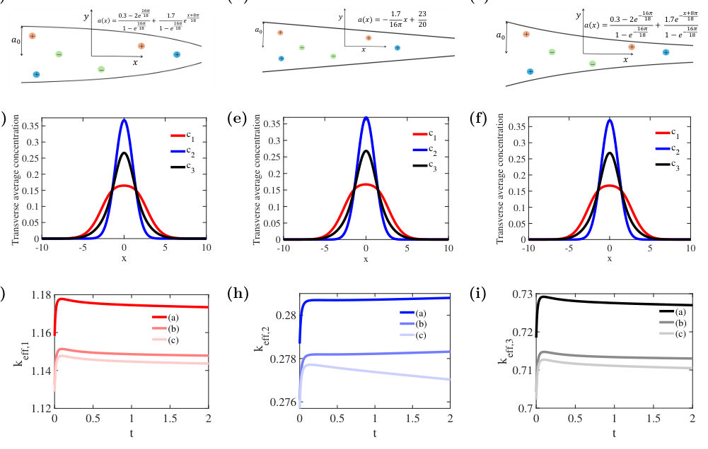
Summary. This paper develops a theoretical framework to describe how the shape of a microchannel can be used to control the dispersion and separation of different ions. By leveraging geometry-induced electric fields, the authors show that certain channel configurations can significantly enhance the efficiency of ionic separation processes.
Why it may be interesting. not directly relevant
Main problem. Investigating the dispersion and separation efficiency of multiple charged ionic species in axially symmetric, slowly varying microchannels, specifically looking at how channel geometry influences electro-diffusive coupling.
Main result. The study discovers a geometry-induced electro-diffusive coupling that can inhibit solute dispersion, leading to non-monotonic behavior in separation efficiency (NTP) and demonstrating that channel geometry can be tuned to enhance ionic separation.
Method. The authors use lubrication approximation, multiple-scale perturbation theory, and homogenization theory to derive a reduced-order macrotransport equation, which is then validated via numerical simulations using the Method of Lines.
Model / system. An electrolyte solution containing N different ionic species flowing through an axisymmetric channel with a slowly varying radius, governed by the Nernst-Planck and Navier-Stokes equations under electroneutrality and zero-current constraints.
Key observables. Effective dispersion coefficients (k_eff), Number of Theoretical Plates (NTP), and transverse-averaged concentration profiles.
Important parameters / regimes. Peclet number (Pe), wall slope/geometry (beta), ionic valency (z_i), ionic diffusivity (k_i), and the arc-to-chord ratio (Lambda).
Assumptions / limitations. The channel is axially symmetric and slowly varying; the system is in the low-Reynolds-number regime; electroneutrality and zero net current are enforced; and the model is valid at the long-time diffusion scale.
Figures summary. Figure 1 shows a schematic of ion dispersion; Figures 2-5 illustrate concentration profiles and effective diffusivity evolution for sinusoidal, triangular, and converging/diverging geometries; Figures 7-9 show the dependence of separation efficiency (N) and cumulative electric effects on geometric parameters.
Paper structure. The paper introduces the problem of multi-species dispersion, presents a mathematical framework using perturbation and homogenization methods, applies the model to various channel geometries (sinusoidal, triangular, converging, diverging), and concludes with an analysis of separation efficiency optimization.
The transport and dispersion of multiple species of charged ions are central to many biological and physical processes, including electrokinetic ion separation. However, most theoretical studies of dispersion in channels have focused on neutral solutes, leaving the transport of multiple charged species comparatively unexplored. Differences in ionic diffusivities in a multispecies electrolyte solution generate an self-induced electric fields that drive electromigration. To capture these effects at the macroscopic scale, we combine the lubrication approximation with homogenization theory, under electroneutrality and zero-current constraints, to derive an effective transport equation governing the cross-sectionally averaged concentrations. We apply our model framework to a range of channel geometries and compute the resulting effective dispersion coefficients. Finally, we investigate how channel geometry can be tuned to enhance ionic separation. We observe a geometry-induced electro-diffusive coupling that inhibits solute dispersion in certain channels, leading to a non-monotonic Number of Theoretical Plates (NTP) and making such channels ideal for separation processes.
Authors: Mustafa Mahmoud Aboulsaad
Type: both · Category: numerical methods · PDF: https://arxiv.org/pdf/2605.00172v1
Analysis basis: full PDF text, analyzed in chunks
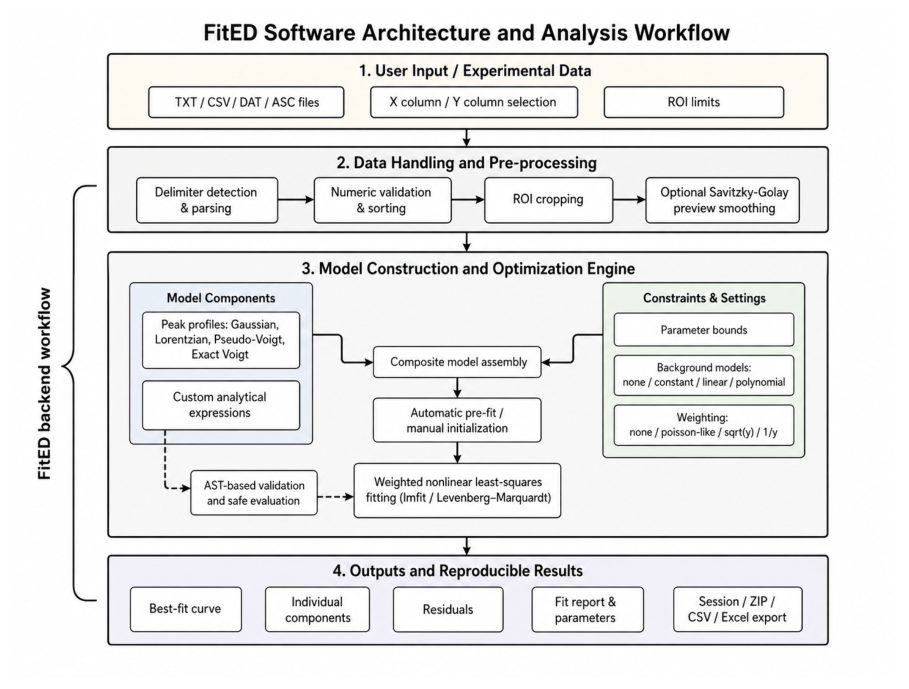
Summary. FitED is a new Python-based tool that simplifies the process of fitting complex peaks and custom functions to experimental data. It combines the ease of a graphical interface with the flexibility of the scientific Python ecosystem, ensuring that data analysis is both accessible and reproducible.
Why it may be interesting. not directly relevant
Main problem. The difficulty of achieving reliable, reproducible, and accessible parameter extraction from complex 1D experimental data, specifically bridging the gap between overly restrictive GUI tools and complex, manual coding environments.
Main result. The development of FitED, a Python-based desktop application that provides a user-centric, extensible environment for both automated and interactive nonlinear fitting of peak profiles and custom analytical functions.
Method. A layered architecture using a numerical backend (NumPy, SciPy, lmfit) and a graphical interface, implementing weighted nonlinear least-squares minimization and an AST parser for custom mathematical expressions.
Model / system. The software is designed for 1D scientific data from platforms such as spectroscopy, diffraction, and time-resolved measurements, supporting models like Gaussian, Lorentzian, Pseudo-Voigt, and exact Voigt profiles, as well as custom decay and saturation curves.
Key observables. Peak centers, integrated areas, FWHM, Gaussian/Lorentzian widths, residuals, and chi-square values.
Important parameters / regimes. Parameter bounds, weighting strategies (unweighted, Poisson-like, etc.), and mixing fractions for Pseudo-Voigt profiles.
Assumptions / limitations. The software is currently limited to one-dimensional, two-column data and assumes that custom backgrounds remain well-defined over the fitting interval.
Figures summary. Figure 1 illustrates the software architecture and the complete analysis pipeline from data import and preprocessing to optimization and final export.
Paper structure. The paper introduces the scientific problem, details the software architecture and numerical backend, describes the mathematical models and functional capabilities, explains the user workflow, and discusses limitations and future development.
Reliable parameter extraction from experimental data is central to quantitative analysis in spectroscopy, diffraction, photoluminescence, chromatography, microscopy, and time-resolved measurements. We present FitED, a Python-based desktop application for interactive and automated nonlinear fitting of one-dimensional scientific data. FitED combines an accessible graphical workflow with a numerical backend capable of fitting both conventional peak profiles and arbitrary user-defined analytical functions. The software supports Gaussian, Lorentzian, Pseudo-Voigt, and exact area-normalized Voigt profiles, together with custom functions such as exponential decays, stretched exponentials, saturation curves, and spectroscopy-specific response functions. It integrates robust text-file import, region-of-interest selection, background modeling, parameter bounds, weighting strategies, automated pre-fit search, iterative peak refinement, residual visualization, session persistence, and structured export of fitted curves, components, reports, and metadata. By combining mathematical transparency with practical usability, FitED aims to make nonlinear fitting more reproducible and accessible while preserving the parameter-level control required by experienced experimental researchers.
Authors: Majid Bahraminasr, Anand Yethiraj
Type: both · Category: statistical mechanics · PDF: https://arxiv.org/pdf/2605.00188v1
Analysis basis: full PDF text, analyzed in chunks
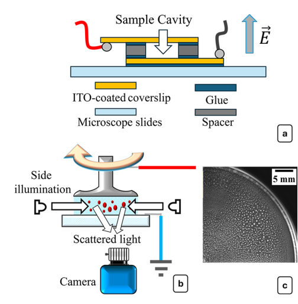
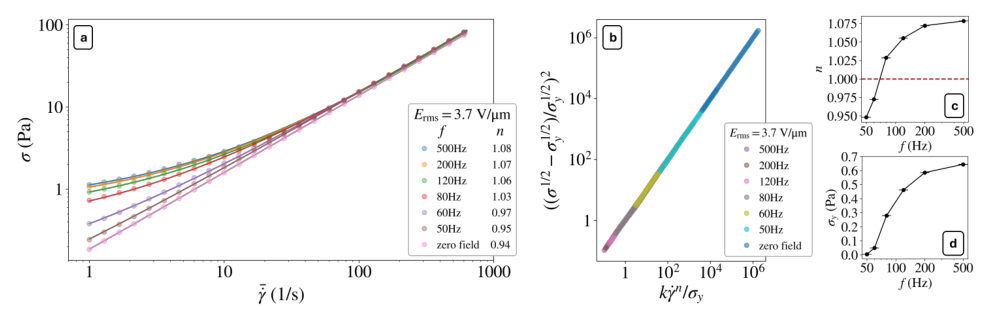
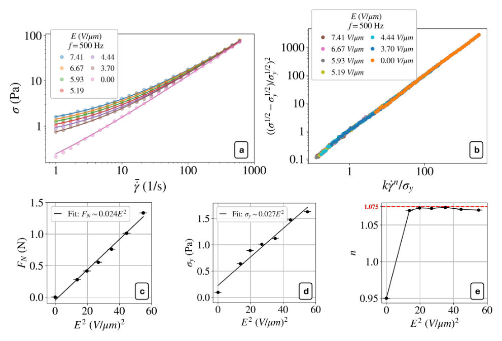
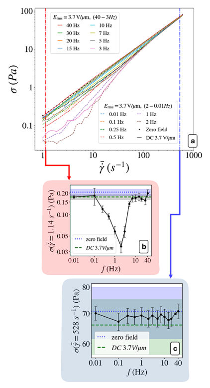
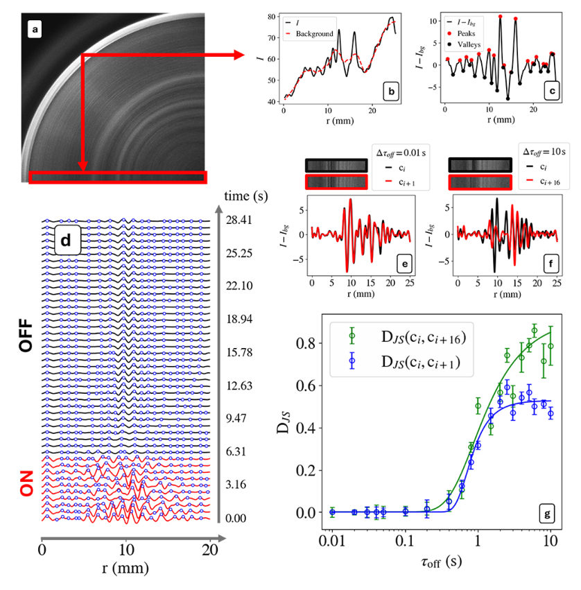
Summary. This paper explores how electric fields drive an emulsion into two distinct regimes: a predictable electrorheological state and a complex, banded electrohydrodynamic state. It demonstrates that the system's structural memory is tied to the lifetime of underlying convective flows. The work provides a bridge between microscopic droplet dynamics and macroscopic rheological properties.
Why it may be interesting. not directly relevant
Main problem. Investigating the transition between electrorheological (ER) and electrohydrodynamic (EHD) regimes in electrically driven emulsions and quantifying the structural memory and decorrelation timescales in the EHD regime.
Main result. The ER regime behaves as a yield-stress fluid with a yield stress scaling as E^2, while the EHD regime exhibits banded structures that lose memory on a timescale of ~1s, matching the electroconvective roll turnover time.
Method. The study combines macroscopic rheology (SAOS and steady shear) with microscopic microrheology (Differential Dynamic Microscopy) and electrorheoimaging (ERI) using Jensen-Shannon divergence for structural analysis.
Model / system. An oil-in-oil emulsion (castor oil droplets in motor oil) subjected to frequency-dependent electric fields and controlled shear rates within a vertical field sample cell.
Key observables. Complex shear modulus (G', G''), yield stress (sigma_y), mean-squared displacement (MSD), radial intensity profiles, and Jensen-Shannon divergence.
Important parameters / regimes. Electric field strength (E_rms), driving frequency (f), shear rate (gamma_dot), and field-off interval (tau_off).
Assumptions / limitations. The ER regime can be modeled as a classic yield-stress fluid using the generalized Herschel-Bulkley model.
Figures summary. Fig 1: Experimental setup and ERI imaging; Fig 2: Flow curves and master curve data collapse; Fig 5: Evolution of intensity profiles and structural decorrelation; Fig 6: Comparison of macroscopic and microscopic viscoelastic moduli.
Paper structure. The paper introduces the ERI technique, characterizes the high-frequency ER regime via scaling and model fitting, compares macro- and microrheology, analyzes the low-frequency EHD regime's banding and memory effects, and concludes with implications for driven soft matter.
Recently, we reported the electrorheoimaging (ERI) technique (Bahraminasr et al, 2026), and found that frequency-dependent electric field of an oil-in-oil emulsion yields two distinct regimes: a high-frequency dipolar, electrorheological (ER) regime and a low-frequency electrohydrodynamic (EHD) regime. In this work, we identify a phenomenological model to fit the results in the ER regime to a classic yield-stress fluid, and find collapse onto a master curve upon rescaling, consistent with a yield stress that grows approximately as $E^2$. Macroscopic small-amplitude oscillatory shear (SAOS) rheology is compared with passive microrheology employing differential dynamic microscopy (DDM), with the close agreement implying scale independence of the ER behaviour, and indicating that, unlike steady shear, SAOS measurements do not restructure these samples and probe underlying material properties. Finally, under the presence of both steady shear and electric fields in the EHD regime, the emulsion forms banded structures composed of alternating droplet-rich and droplet-depleted regions. We explore recurrence and divergence in the location of these bands: they emerge within seconds of field application and decay rapidly after the field is switched off. Using the Jensen--Shannon divergence between radial intensity profiles, we show that the driven structure loses memory on timescales of order $1~s$ commensurate with the timescale of the EHD convection roll. For much longer field-off intervals successive banding events become statistically independent.
Authors: Keitaro Takashina, Naoki Yano, Asahi Oe, Mari Taniguchi, Shuto Kimura, Kazuya Ando
Type: both · Category: other · PDF: https://arxiv.org/pdf/2605.00359v1
Analysis basis: full PDF text, analyzed in chunks
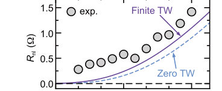
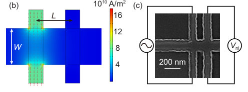
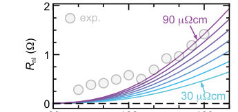
Summary. This paper investigates the origin of nonlocal resistance in titanium Hall bars. By comparing experimental data with finite-element simulations, the authors demonstrate that the signal cannot be explained by simple geometric leakage (Ohmic bypass), pointing toward the presence of the orbital Hall effect.
Why it may be interesting. not directly relevant
Main problem. The study aims to determine whether the observed nonlocal resistance in Ti Hall bars is caused by an Ohmic bypass effect or by orbital-current transport driven by the orbital Hall effect (OHE).
Main result. The experimental nonlocal resistance remains significantly higher than the simulated Ohmic bypass contribution, especially in the small-width regime, suggesting an additional contribution from the orbital Hall effect.
Method. The researchers performed nonlocal resistance measurements on Ti Hall bars and used finite-element simulations (COMSOL) to model the current density distribution and the Ohmic bypass effect.
Model / system. The physical system consists of single-layer Ti (30-nm-thick) Hall bars with a 4-nm-thick SiO2 cap, featuring a central channel with varying widths (80 to 180 nm).
Key observables. Nonlocal resistance (Rnl), nonlocal voltage (Vnl), and current density distribution.
Important parameters / regimes. Central channel width (W), channel length (L), Ti resistivity, and terminal widths.
Assumptions / limitations. The study assumes the spin Hall effect in Ti is negligible and uses the Laplace equation to estimate the simplified bypass contribution.
Figures summary. Fig 1 shows the measurement geometry, COMSOL current density simulation, and SEM image of the device; Fig 2 compares measured Rnl vs W with simulated bypass contributions; Fig 3 shows a parameter sweep of Ti resistivity.
Paper structure. The paper introduces the problem of OHE in Ti, describes the device fabrication and measurement setup, presents the experimental results, compares these results to Ohmic bypass simulations, and concludes with evidence for OHE-driven transport.
We investigate nonlocal transport in single-layer Ti Hall bars to explore signatures of orbital-current transport driven by the orbital Hall effect. Despite the negligible spin Hall effect in Ti, we observe a finite nonlocal resistance in the single-layer Ti Hall bar and study its dependence on the central channel width. Finite-element simulations show that the measured signal contains a sizable Ohmic bypass contribution. However, the bypass contribution is strongly suppressed at small channel widths and cannot fully account for the observed nonlocal resistance even when variations in the Ti resistivity are taken into account. Our results therefore suggest an additional nonlocal contribution distinct from the Ohmic bypass background, which may be associated with orbital transport driven by the orbital Hall effect in Ti.
Authors: Junxiang Yao, Julian van Doorn, Mariona Cabero, Jan Aarts
Type: experiment · Category: strongly correlated electrons · PDF: https://arxiv.org/pdf/2605.00577v1
Analysis basis: full PDF text, analyzed in chunks
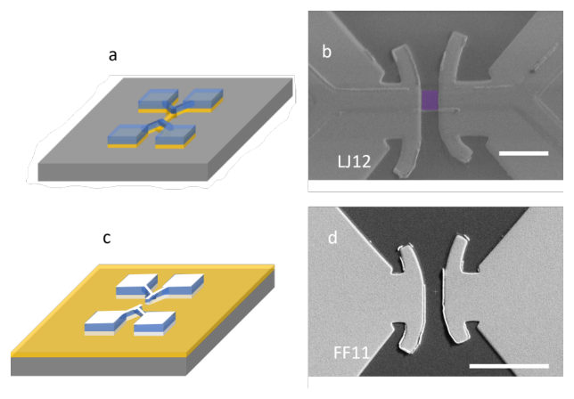
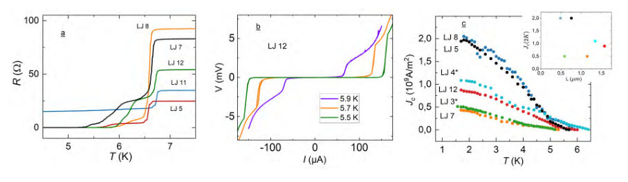
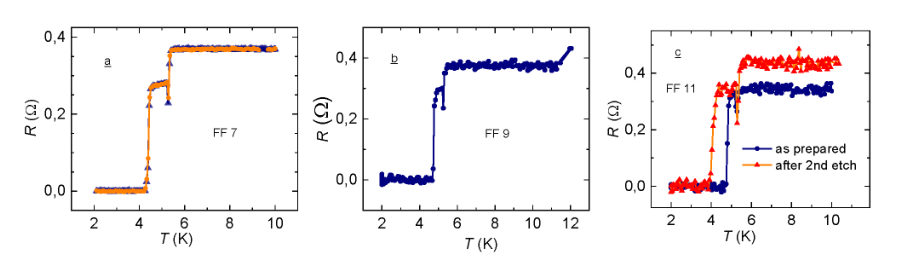
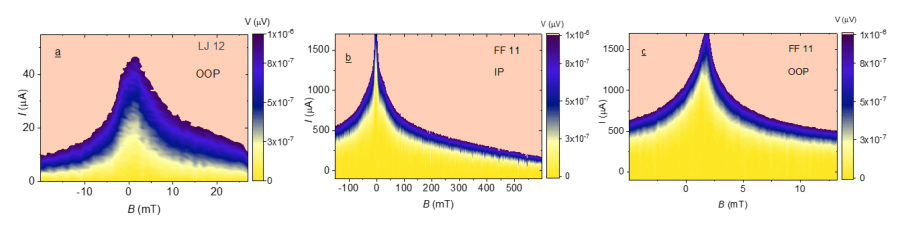
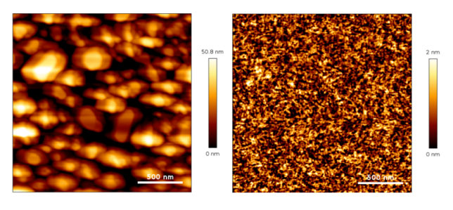
Summary. The researchers investigated long-range proximity effects in junctions using the half-metal LSMO. They found that adding a Pt interlayer maintains strong supercurrents, suggesting that the heavy metal promotes triplet generation through spin-orbit coupling at the interface.
Why it may be interesting. not directly relevant
Main problem. Investigating the mechanism of long-range triplet supercurrent transport and the role of the interface in LSMO-based Josephson junctions.
Main result. The study demonstrates that triplet supercurrents persist even with a Pt interlayer, suggesting that the Pt layer promotes triplet generation, potentially via Rashba-like spin-orbit coupling.
Method. Transport measurements (R vs T, I-V, SQI) and advanced microscopy (STEM-EELS, HAADF) were used to analyze junction properties and interface chemistry.
Model / system. Planar Josephson junctions and full-film electrode structures consisting of a half-metallic ferromagnet (La0.7Sr0.3MnO3), a Pt interlayer, and superconducting NbTi contacts.
Key observables. Critical current density (Jc), resistance (R), superconducting transition temperature (Tc), and Superconducting Quantum Interference (SQI) patterns.
Important parameters / regimes. Junction length (L), junction width (w), Pt interlayer thickness (7 nm), and temperature (down to 2 K).
Assumptions / limitations. The Pt interlayer is assumed to be wetting and non-oxidizing.
Figures summary. Fig 1 shows device layouts; Fig 2 displays transport properties (R vs T, I-V, Jc vs T) for long junctions; Fig 3 shows resistance for full-film devices; Fig 4 shows SQI patterns; Fig 6 shows high-resolution STEM-EELS imaging and atomic profiles.
Paper structure. The paper introduces the problem of triplet transport, describes the fabrication and characterization of long-junction and full-film devices, analyzes the impact of Pt interlayers on supercurrents, and concludes with structural/chemical analysis of the interfaces.
Over the last decade, there has been steady research on superconducting junctions with a ferromagnet as the weak link, and where triplet correlations can transport supercurrents over a substantial distances. Of particular interest are halfmetallic ferromagnets, in which only one spin band is present, so that, presumably, the induced supercurrent is fully spin-polarized. We have earlier reported on a study of triplet transport in planar La0.7Sr0.3MnO3(LSMO) nanostrip Josephson junctions with NbTi superconducting contacts, where we found high values for the supercurrents, and large junction lengths (up to 1.3 μm). Here, we extend that work by studying the dependence of the critical current Ic on the length of the nanostrip between the contacts and the width of the strip. All junctions show strong supercurrents, but we do not observe simple systematics. Apparently, the fabrication process does not allow sufficient control over some of its parameters. To gain more insight in the mechanism for triplet generation at the LSMO/NbTi interface, we also studied the effect of Pt as an interlayer between the LSMO and the NbTi. For this, we etched a NbTi/Pt electrode structure on a full film of LSMO. The results are highly promising, showing sharp superconducting transitions and zero-resistance states being reached at an electrode distance of 2 μm, with indications that larger distances should be feasible.
Authors: Kohei Yoshikawa, Kokoro Shikata, Kang Kim, Nobuyuki Matubayasi
Type: theory · Category: disordered systems and neural networks · PDF: https://arxiv.org/pdf/2605.00415v1
Analysis basis: full PDF text, analyzed in chunks
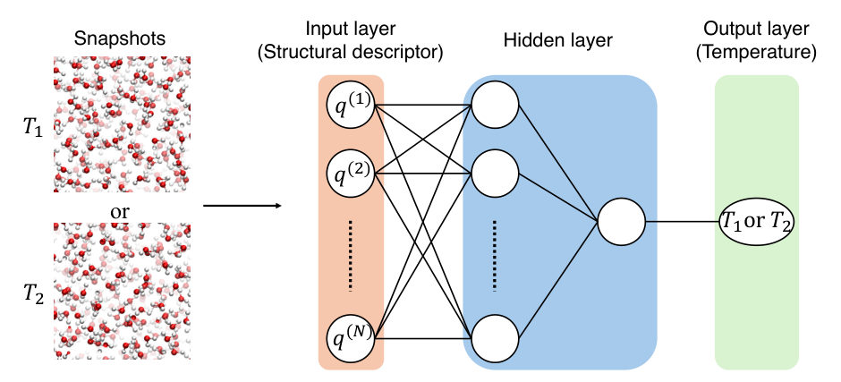
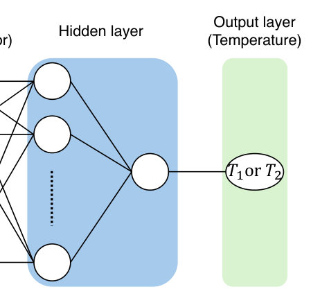
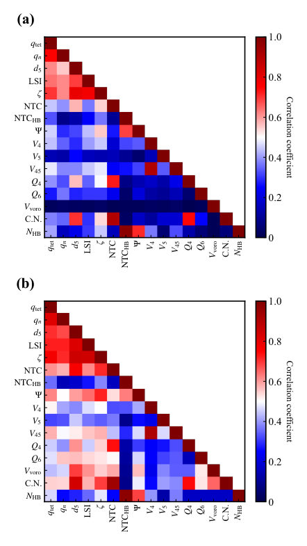
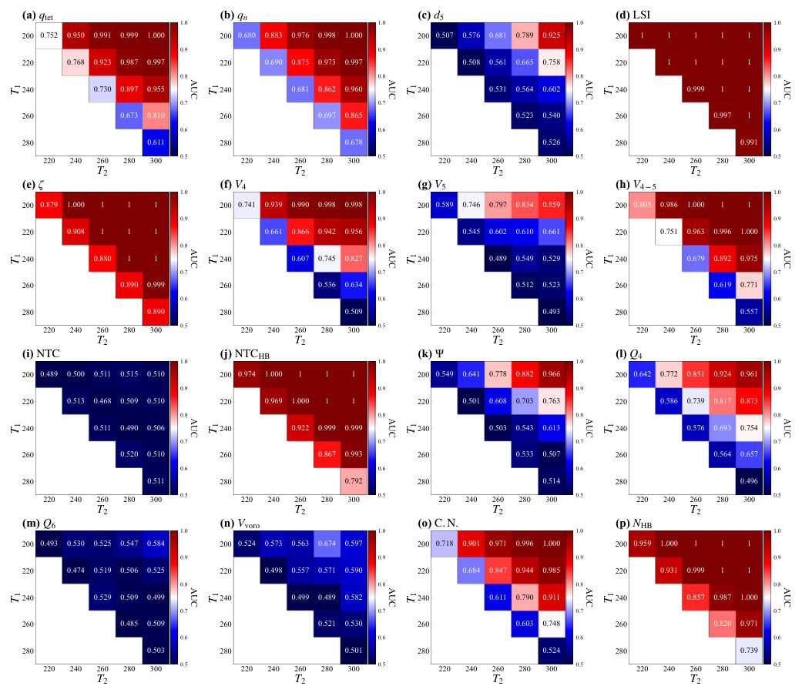
Summary. This paper provides a data-driven benchmark for 16 structural descriptors used to study supercooled water. By using neural networks to classify temperature states, the authors demonstrate that descriptors capturing coordination shell separation and H-bond topology are most effective at identifying the liquid-liquid phase transition signatures.
Why it may be interesting. not directly relevant
Main problem. The lack of a systematic, objective framework to compare 16 different structural descriptors used to characterize the local molecular environments and temperature-dependent structural changes in supercooled water.
Main result. The study identifies LSI, zeta, NTCHB, and NHB as the most effective descriptors for distinguishing temperature states, revealing that the separation of coordination shells and H-bond connectivity are the primary drivers of structural changes.
Method. A machine learning framework using Fully Connected Neural Networks (FCNN) for a temperature classification proxy task, combined with Explainable AI (LIME) to interpret descriptor importance and Pearson correlation for redundancy analysis.
Model / system. Supercooled liquid water simulated using the TIP4P/2005 water model under both isochoric (constant volume) and isobaric (constant pressure) conditions in the temperature range of 200 K to 300 K.
Key observables. Area Under the Curve (AUC) for classification performance, Pearson correlation coefficients, LIME importance values, tetrahedral order (q_tet), Local Structure Index (LSI), and hydrogen-bond connectivity.
Important parameters / regimes. Temperature range (200-300 K), pressure (1 bar), mass density (1 g/cm^3), and radial cutoff distance (0.35 nm).
Assumptions / limitations. The FCNN is intentionally kept simple to focus on descriptor evaluation rather than maximizing model capacity; the study assumes the temperature classification task serves as a valid proxy for structural sensitivity.
Figures summary. Figure 1 shows the FCNN architecture; Figure 2 displays correlation heatmaps of descriptors; Figure 3 and 4 show classification performance (AUC) under isochoric and isobaric conditions; Figure 5 shows LIME-based feature interpretation.
Paper structure. The paper identifies the problem of descriptor comparison, describes the MD simulation and ML framework, presents correlation and classification results for various descriptor groups, uses XAI to interpret the physical drivers, and concludes with a benchmarking framework.
The anomalous behavior of liquid water is widely associated with a liquid-liquid phase transition between high- and low-density states in the supercooled regime. At the microscopic level, tetrahedral hydrogen-bond networks govern these properties, motivating structural descriptors that characterize local molecular environments. These structural descriptors quantify features such as tetrahedral order, local density, and the separation between the first and second coordination shells; however, they have largely been proposed independently, with limited systematic comparison. Here we evaluate 16 previously proposed descriptors using a neural-network-based temperature classification framework, enabling an objective assessment of their ability to distinguish temperature-dependent structural changes in supercooled water. We further apply an explainable artificial intelligence method that identifies the structural features responsible for the model predictions. This approach reveals how different descriptors encode local structural information and establishes a data-driven framework for benchmarking structural descriptors in liquid water.
Authors: Sumanta Mukherjee
Type: theory · Category: disordered systems and neural networks · PDF: https://arxiv.org/pdf/2605.00537v1
Analysis basis: full PDF text, analyzed in chunks
Summary. This paper provides a theoretical framework to identify the Griffiths phase in 3D antiferromagnetic and ferrimagnetic systems. It reveals that these systems exhibit much more complex magnetic signatures, such as upward deviations in inverse susceptibility, compared to standard ferromagnetic models. This work offers a way to experimentally distinguish true Griffiths singularities in disordered magnetic materials.
Why it may be interesting. not directly relevant
Main problem. The study aims to extend the theoretical understanding of the Griffiths phase (GP) from well-documented ferromagnetic systems to more complex antiferromagnetic and ferrimagnetic systems.
Main result. The researchers found that while ferromagnetic systems show a downward deviation in inverse susceptibility, antiferromagnetic systems exhibit an upward deviation, and ferrimagnetic systems show a complex crossover behavior including a compensation point where the system becomes analytic.
Method. The study uses a Ginzburg-Landau-Wilson (GLW) framework incorporating quenched disorder, random dilution, and optimal fluctuation theory, supplemented by a quantum description of cluster magnetization.
Model / system. The model consists of 3D spin-1/2 Ising ferromagnetic, antiferromagnetic, and ferrimagnetic systems subject to random dilution of magnetic sites.
Key observables. Magnetization (M), inverse susceptibility (chi^-1), differential susceptibility (chi_d), and the power-law exponent (lambda_H).
Important parameters / regimes. Disorder strength (p), temperature (T), magnetic field (H), and the percolation limit (pc = 0.6884).
Assumptions / limitations. The study assumes a maximum cluster size of 7000 for computational tractability and uses a linear approximation for Tc suppression.
Figures summary. Figure 1 shows the effect of random dilution; Figure 2 displays inverse susceptibility and the temperature dependence of the exponent for FM systems; Figure 3 shows inverse susceptibility and magnetization for AFM systems; Figure 5 illustrates the power-law behavior and the compensation point in FiM systems.
Paper structure. The paper introduces the problem of Griffiths phase identification, develops a theoretical framework using GLW theory, applies this framework to FM, AFM, and FiM systems, and concludes with a discussion on the utility of the proposed identification methods.
In this report, we provide a theoretical framework for the magnetic behavior of the Griffiths phase, which, along with three-dimensional spin-1/2 Ising ferromagnetic systems, can be extended to antiferromagnetic as well as ferrimagnetic systems. We find that the magnetic behavior in the Griffiths phase of three-dimensional antiferromagnetic and ferrimagnetic systems is more unusual than that of conventional ferromagnetic systems. However, this study offers a possible framework for the identification of Griffiths phase behavior in three-dimensional antiferromagnetic and ferrimagnetic systems.
Authors: Chao-Hsiang Sheu, Mikhail Shifman
Type: theory · Category: other · PDF: https://arxiv.org/pdf/2605.00757v1
Analysis basis: full PDF text, analyzed in chunks
Summary. This paper provides numerical evidence that twisted, toroidal-type solitons (vortons) are classically stable in a 4D scalar QED-derived model. It demonstrates that these structures reach a stable equilibrium length, preventing them from collapsing or expanding indefinitely. This confirms a long-standing conjecture regarding the existence of stable Hopf-like solitons in these field theories.
Why it may be interesting. not directly relevant
Main problem. Investigating the classical stability of Hopf-like solitons (vortons) of the toroidal-twisted type and determining if they are dynamically stabilized at a finite equilibrium length.
Main result. Numerical analysis confirms that large-size Hopf-like solitons exist as local energy minima in the full QED theory, with the twisted string being dynamically stabilized at a finite equilibrium length L*.
Method. Numerical analysis using a Python-based implementation of a 4th-order finite difference stencil and scipy.optimize to solve nonlinear equations of motion.
Model / system. A deformed O(3) nonlinear sigma model (Faddeev-Hopf model) emerging from the low-energy limit of 4-dimensional scalar quantum electrodynamics (QED) with two charged scalar fields.
Key observables. Total energy E, equilibrium length L*, soliton mass M_sol, and the Hopf-like topological invariant h = kn.
Important parameters / regimes. The parameter beta (controlling the fourth-order term), winding numbers n (azimuthal) and k (longitudinal), and the scale hierarchy L* >> rho >> 1/m_gamma.
Assumptions / limitations. The analysis uses a twisted string ansatz in an R2 x S1 geometry, assuming negligible extrinsic curvature (large-loop limit) and a gauge field constraint where the current C = 0.
Figures summary. Figure 3 shows energy E vs. length L for various beta values; Figure 4 shows soliton mass growth with beta; Figure 6 shows radial energy density distribution; Figure 7 shows energy dependence based on previous analytic estimates.
Paper structure. The paper introduces the Faddeev-Hopf model and the vorton conjecture, presents the numerical methodology and discretization, details the energy minimization results and parameter dependence, compares findings with existing literature (Jäykkä-Speight and BDS models), and discusses stability and limitations.
The Faddeev-Hopf model [1] supporting Hopfions was shown to emerge in the low-energy limit of four-dimensional scalar quantum electrodynamics (QED) with two charged scalar fields [2, 3]. Faddeev and Noemi conjectured that the Hopfions and Hopf-like solitons -- vortons -- can be based on a twisted toroidal structure inherent to QED [4-6]. This conjecture was discussed in detail in [2] in the approximation of negligibly small extrinsic curvature. Qualitative and semi-quantitative arguments were used to demonstrate the validity of the Faddeev-Noemi hypothesis. Here we further enhance the proof by applying a numerical analysis which confirms that large-size Hopf-like solitons exist as local energy minima in the full QED theory (in the Faddeev-Skyrme model they become topological solitons representing the global minima in the given topological sector).
Authors: Min-Chul Kang, Chunxu Yan, Alexander Frisch, Xufei Fang, Liming Xiong, Lin Zhou
Type: both · Category: other · PDF: https://arxiv.org/pdf/2605.00801v1
Analysis basis: full PDF text, analyzed in chunks
Summary. This paper demonstrates that the mobility of dislocations in SrTiO3 is intrinsically linked to the presence of oxygen vacancies at the dislocation core. By combining high-resolution electron microscopy with molecular dynamics, the authors show that moving dislocations leave behind oxygen-deficient trails, creating a direct coupling between defect chemistry and mechanical plasticity.
Why it may be interesting. not directly relevant
Main problem. Understanding how oxygen vacancy density and local redox chemistry at dislocation cores modulate dislocation mobility and plasticity in ionic crystals like SrTiO3.
Main result. Small dislocation loops are oxygen-deficient and Ti-reduced, leading to low mobility, whereas larger loops are near-stoichiometric and highly mobile; MD simulations show that kink-mediated glide leaves behind oxygen-deficient trails.
Method. The study combines aberration-corrected STEM and EELS (with PCA and NNLS analysis) for experimental characterization with atomic-level Molecular Dynamics (MD) simulations using a rigid-ion potential.
Model / system. The physical system is single-crystalline Strontium Titanate (SrTiO3), a perovskite oxide, focusing on <110>{1-10} dislocation loops and their core chemistry.
Key observables. Ti valence states (Ti2+, Ti3+, Ti4+), oxygen vacancy density, dislocation glide distance, and dislocation core structure (edge vs. screw components).
Important parameters / regimes. Dislocation loop size (short vs. long), glide distance, shear stress (1.5-3.0 GPa in MD), and temperature (room temperature plasticity).
Assumptions / limitations. The MD simulations use a rigid-ion potential and high shear stress to facilitate observable dislocation motion within a limited simulation cell.
Figures summary. Fig 1 shows the slip system, indentation-induced loops, and TEM/STEM structural imaging; Fig 2 presents EELS/NNLS results for Ti oxidation states in short loops; Fig 3 shows PCA results for chemical component distribution; Fig 4 displays MD time-sequences of dislocation motion and charge density evolution.
Paper structure. The paper introduces the problem of dislocation chemistry in oxides, presents experimental evidence of chemical heterogeneity in dislocation loops via STEM-EELS, uses MD simulations to provide a mechanistic explanation via kink-mediated vacancy production, and concludes with implications for tailoring oxide plasticity.
Dislocation core chemistry in oxides critically influences mechanical behavior and functionality; yet the evolution of core chemistry during the dislocation motion in them has not been directly observed. Here, using SrTiO3 as a model material, we combine aberration-corrected scanning transmission electron microscopy and electron energy-loss spectroscopy with atomic-level molecular dynamics (MD) simulations to correlate the <110>{1-10} dislocation core structure, oxygen vacancy density, charge state, and mobility with each other. We find that the mechanically induced dislocation loops exhibit dissociated cores, whose oxygen vacancy density depends on the gliding distance: short loops are Ti-reduced and oxygen-deficient at the edge dislocation core, whereas longer loops remain close to stoichiometry in both the edge and screw components. MD simulations reveal that kink-assisted edge dislocation glide in SrTiO3 leaves oxygen-deficient trails behind, modulating the oxygen content inside the edge core. These results demonstrate that oxygen-vacancy evolution at the dislocation core intrinsically couples with plasticity in ionic crystals, suggesting a mechanism for oxygen vacancy-dependent dislocation mobility in plastically deformed oxides.
Authors: Shuaijia Chen, Kenta Morita, Dumindu Dassanayaka, Hans-Jürgen Butt, Peter C. Sherrell, Amanda V. Ellis, Joseph D. Berry
Type: experiment · Category: other · PDF: https://arxiv.org/pdf/2605.00481v1
Analysis basis: full PDF text, analyzed in chunks
Summary. This study demonstrates that pre-charging polymer surfaces can be used to precisely control the electrification and motion of water droplets. By manipulating surface charge, the researchers showed they could increase droplet mobility or even induce droplet splitting, providing a method for directed fluid manipulation.
Why it may be interesting. not directly relevant
Main problem. The mechanisms and methods for controlling solid-liquid charge transfer and droplet behavior influenced by pre-existing surface-bound electric charges on polymers are unclear.
Main result. Pre-charging polymer surfaces allows droplets to pick up deposited ions during initial wetting, where moderate charge densities lead to a linear correlation in charge transfer and increased contact-line mobility, while high densities trigger droplet splitting.
Method. The researchers used an ion gun to pre-charge PTFE and Nylon surfaces and an electrometer to monitor charge transfer during controlled wetting/dewetting cycles using a syringe pump and goniometer.
Model / system. The experimental platform consists of water droplets interacting with pre-charged dielectric polymer surfaces (PTFE and Nylon) mounted on electrodes.
Key observables. Surface charge density, charge transfer (delta q), contact angle, contact-line mobility, and droplet splitting/fission.
Important parameters / regimes. Surface charge density (up to +/- 60 uC/m2), moderate regime (|sigma| < 40 uC/m2), and humidity/temperature.
Assumptions / limitations. Assumed an infinite flat plate and homogeneous charge distribution for calibration; used Rayleigh's criterion for droplet stability analysis.
Figures summary. Figure 1 shows charging/neutralization protocols; Figure 2 shows charge measurement traces; Figure 3 plots charge transfer vs. deposited density and shows splitting; Figure 4 shows contact line displacement and contact angle vs. charge density.
Paper structure. The paper introduces the problem of surface charge control, describes the experimental setup and charging/calibration protocols, presents results on charge transfer linearity and material independence, discusses droplet instabilities and mobility, and concludes with a theoretical stability criterion.
Surface-bound electric charge on polymer materials can strongly influence droplet behaviour and solid-liquid charge transfer, but the mechanisms and the means to control these effects remain unclear. In this work, we systematically controlled the surface charge on polymer surfaces, including polytetrafluoroethylene (PTFE) and Nylon-66, by first neutralising the surfaces with an anti-static ion blower and then applying charge using an ion gun. We find that droplets pick up pre-deposited surface ions during the first wetting of the surface, and that the transferred charge directly correlates with the deposited charge encountered by the wetted area for moderate deposited densities (|σ_d |<40 μC/m2) independent of material properties. We also demonstrate that the deposited charge reduces contact angle and increases contact-line mobility in a manner consistent with an increase in effective solid surface energy. For higher surface charge densities, we observe instabilities such as droplet splitting or detachment. This work demonstrates an effective approach to control solid-liquid electrification, enabling amplification or suppression of surface charge and the directed manipulation of fluid motion on surfaces.
Authors: Daire Mallon, Zixuan Wu, Jheng-Cyuan Lin, Ruiwen Xie, Bo Zhao, Charles Godfrey, Qing He, Lucia Iglesias, Pierluigi Gargiani, Manuel Valvidares, Peter Bencok, Francesco Maccherozzi, Larissa S. I. Veiga, Paul Steadman, Manuel Bibes, Hongbin Zhang, Paolo G. Radaelli, Hariom Jani
Type: both · Category: strongly correlated electrons · PDF: https://arxiv.org/pdf/2605.00815v1
Analysis basis: full PDF text, analyzed in chunks
Summary. This paper reveals that XMCD in altermagnets like hematite is driven by local spin-orbit coupling and anisotropy rather than being a direct signature of altermagnetic spin-splitting. By decoupling the XMCD signal from weak magnetic canting, the authors provide a new method for high-resolution, sign-sensitive imaging of complex magnetic textures.
Why it may be interesting. not directly relevant
Main problem. The study investigates whether X-ray magnetic circular dichroism (XMCD) is a direct signature of altermagnetism or a non-co-rotating property driven by spin-orbit coupling and local anisotropy.
Main result. The researchers demonstrate that XMCD is not a direct proxy for altermagnetism but arises from spin-direction-induced symmetry breaking and local anisotropy. They successfully used XMCD to resolve the 180-degree ambiguity in the Néel vector orientation during imaging.
Method. The study combines X-ray spectroscopy (XMCD/XMLD) and X-ray photoemission electron microscopy (X-PEEM) with DFT and multiplet ligand-field theory calculations.
Model / system. The physical system is alpha-Fe2O3 (hematite), a g-wave altermagnet with a corundum crystal structure. The model utilizes a 3D Faraday tensor framework and magnetic point groups to describe the magneto-optical response.
Key observables. XMCD intensity, XMLD contrast, Néel vector (L), weak magnetization (M), and the effective magnetic dipole vector (T).
Important parameters / regimes. Morin transition temperature (Tm), spin-orbit coupling (SOC) strength, and the azimuthal angle (phi) between the Néel vector and the crystal axes.
Assumptions / limitations. The analysis assumes the XMCD response can be expanded via 1st and 3rd order Faraday tensors and relies on the accuracy of the DFT+MLFT for electronic structure.
Figures summary. Figures show the evolution of XMCD spectra with spin rotation, the control of the XMCD vector via geometry, and reconstructed 6-color vector maps of the Néel vector orientation.
Paper structure. The paper introduces the problem of XMCD as a proxy for altermagnetism, presents experimental measurements of spin rotation and anisotropy, provides a theoretical framework using Faraday tensors and symmetry groups, and concludes with the application of these findings to nanoscale texture imaging.
Altermagnets are an emerging class of collinear antiferromagnets that exhibit unconventional spin-polarised electronic bands, potentially unlocking new functionalities that do not rely on spin-orbit coupling (SOC). Experimental signatures traditionally associated with spin polarisation, like X-ray magnetic circular dichroism (XMCD), are thus being used as a validation of altermagnetism. However, unlike altermagnetic spin-splitting, these responses require SOC and are not invariant under spin-space rotations. This brings into question the extent to which they can be considered direct signatures of altermagnetism. Here, we exploit the g-wave altermagnet $α$-Fe$_{2}$O$_{3}$ to demonstrate that XMCD is governed precisely by the spin-direction-induced symmetry breaking that altermagnetic spin groups are designed to ignore. Strikingly, the XMCD is highly anisotropic and is decoupled from the weak magnetic canting. We show that this anomalous XMCD can be described by on-site Faraday tensors capturing the locally uncompensated spin-orbital anisotropies - a scenario that can be applied to other altermagnets. Leveraging this, we reconstruct complete vectorial maps of nanoscale textures in $α$-Fe$_{2}$O$_{3}$ thin films, including domain walls and topological solitons, which are promising for building future spintronics and magnonics devices.
Authors: Martina Russo, Roland van der Vegt, Bohai Liu, Sam Beijers, Sara Salera, Guillaume Baffou, Klaas-Jan Tielrooij, Peter Zijlstra
Type: both · Category: other · PDF: https://arxiv.org/pdf/2605.00587v1
Analysis basis: full PDF text, analyzed in chunks
Summary. This paper demonstrates that using hexagonal boron nitride (hBN) as a nanoscale heat spreader can significantly mitigate the temperature rise caused by plasmonic heating in gold nanoparticles. By combining numerical simulations with advanced wavefront microscopy, the authors establish design guidelines for using 2D materials to improve thermal management in nanophotonic and biosensing platforms.
Why it may be interesting. not directly relevant
Main problem. Localized optical heating (plasmonic heating) in gold nanostructures can degrade the performance of heat-sensitive applications like biosensing and microelectronics. The challenge is to find efficient nanoscale thermal management strategies in aqueous environments.
Main result. Integrating hexagonal boron nitride (hBN) thin flakes as heat spreaders reduces the steady-state temperature rise by up to 60% compared to glass. The study identifies two heat dissipation pathways and shows that cooling efficiency depends on hBN thickness and interfacial thermal conductance.
Method. The study combines finite-element simulations (COMSOL) to model heat transport with experimental nanothermometry using Cross-Grating Wavefront Microscopy (CGM) to map temperature distributions.
Model / system. The system consists of 100 nm gold nanospheres immobilized on hBN flakes (ranging from 1 to 100 nm thick) deposited on glass, all immersed in an aqueous (water) environment.
Key observables. Steady-state temperature rise, 2D temperature distribution maps, optical path difference (OPD), and scattering spectra.
Important parameters / regimes. hBN thickness, in-plane thermal conductivity, interfacial thermal conductance, contact area fraction, and laser power density.
Assumptions / limitations. The gold nanoparticles are modeled as truncated spheres to account for realistic contact area; hBN is treated as thermally anisotropic.
Figures summary. Figure 3 shows the CGM setup and temperature maps; Figure 5 displays temperature rise vs. laser power and cooling factors vs. thickness; Figure 6 demonstrates the accuracy of CGM thickness measurements compared to AFM.
Paper structure. The paper introduces the problem of plasmonic heating, describes the experimental CGM setup and hBN transfer process, presents simulation results for heat dissipation regimes, validates the CGM technique against AFM, and concludes with the effectiveness of hBN as a heat spreader.
Optical heating of plasmonic nanostructures is a critical challenge in nanoscale systems. Although plasmonic effects enable enhanced optical functionalities, the associated temperature rise can degrade performance in heat-sensitive applications such as biosensing, nanophotonics, and microelectronics. Conventional cooling strategies fail at these scales due to limited heat transport and high interfacial thermal resistance, motivating the integration of advanced materials for thermal management. Here, we investigate hexagonal boron nitride (hBN) thin flakes as heat spreaders to mitigate plasmonic heating of gold nanospheres immobilized on hBN deposited on glass and surrounded by water. Using finite-element simulations, we quantify the influence of hBN thickness, in-plane thermal conductivity, and interfacial thermal conductance on cooling efficiency. Complementary experiments employ cross-grating wavefront microscopy (CGM) for nanothermometry to map the temperature around optically heated gold nanoparticles and quantify the cooling effect of hBN. We extend the application of CGM for rapid, non-invasive, and all-optical characterization of non-absorbing 2D materials. Our results reveal a strong thickness dependence, where heat dissipation in thin flakes is limited by the heat capacity of hBN and in thick flakes by interfacial thermal conductance. Including hBN, we obtain a reduction in temperature rise by up to 60% compared to glass. In addition, the presence of two main heat dissipation pathways emerges: a direct one from the nanoparticle to the hBN and an indirect one from the particle via water to the hBN. This combined simulation-experiment framework offers a versatile approach to improve thermal management in plasmonic systems and beyond, establishing design guidelines for integrating 2D materials into thermally sensitive platforms such as biosensors and integrated circuits.
Authors: Artem Petrov, Guillermo A. Hernández-Mendoza, Alfredo Alexander-Katz
Type: theory · Category: statistical mechanics · PDF: https://arxiv.org/pdf/2605.00293v1
Analysis basis: full PDF text, analyzed in chunks
Summary. This study uses SCFT to map the equilibrium phase behavior of small block copolymer nanodroplets on surfaces. It demonstrates that these droplets can undergo reversible structural transitions in response to external stimuli, offering a pathway to creating smart, switchable hierarchical coatings.
Why it may be interesting. not directly relevant
Main problem. Understanding the structural versatility and stimuli-responsiveness of small (10-100 nm) surface-adsorbed symmetric diblock copolymer nanodroplets.
Main result. The discovery of a 4D morphological diagram showing that these droplets can form various switchable nanostructures, such as striped ellipsoids and onion-like particles, via external stimuli like temperature or surfactants.
Method. Large-scale Self-Consistent Field Theory (SCFT) calculations in 2D and 3D, augmented by a custom Iterative Correction Algorithm (ICA) to establish near-equilibrium morphologies.
Model / system. Small (10-100 nm) surface-adsorbed droplets of symmetric diblock copolymers (A and B blocks) in a surrounding medium (C) on a substrate modeled with tethered homopolymers (S).
Key observables. Droplet morphology/nanostructure classes, contact angle, surface preference, and free energy.
Important parameters / regimes. Flory-Huggins interaction parameters (chi_AB, chi_AC, etc.), contact angle (theta), and surface preference (Pref_A).
Assumptions / limitations. The 3D calculations focused on nanodroplets and excluded certain film-like or micelle-like structures; the surfactant model assumed incompatibility between surfactant blocks and the primary BCP blocks.
Figures summary. Figure 1 shows the model of the surface and medium; Figures 2 and 3 present 2D morphological diagrams under different wetting conditions; Figure 4 shows 3D equilibrium structures and comparison with experimental AFM/SEM; Figure 5 illustrates the effect of surfactant addition.
Paper structure. The paper introduces the problem of droplet versatility, describes the SCFT and ICA methodology, presents the 4D morphological phase diagrams, demonstrates stimuli-responsiveness through surfactant modeling, and validates results against experimental data.
Block copolymers often create droplets when placed on a substrate. Such nanostructured droplets can be arranged into regular microstructured arrays, thereby forming hierarchically organized materials that can be used in microelectronics, plasmonics, sensing, photonics, metamaterials production, and even cryptography. However, it is unclear if such materials can be stimuli-responsive, i.e., be able to change their nanostructure on a single droplet level upon applying external stimuli. In this work, we discovered that small (10-100 nm) surface-adsorbed droplets of symmetric diblock copolymers can form a multitude of different externally switchable nanostructures. We obtained a near-equilibrium, comprehensive 4D diagram of droplet morphologies by performing large-scale self-consistent field theory (SCFT) calculations under various wetting and phase separation conditions. The SCFT modeling was augmented with a computational algorithm that established an equilibrium droplet morphology in a given system without assuming potentially equilibrium structures prior to simulation. The discovered droplet nanostructures agreed excellently with previously published experimental data. Crucially, we showed that direct and reversible transitions between different droplet morphologies are possible upon changing the interaction strength between components, which can be tuned externally in experiments by adding surfactants or controlling temperature. We confirmed experimental realizability of such stimuli-responsiveness by modeling surfactant addition that led to a switch between droplet nanostructures. This work demonstrates that even the simplest symmetric diblock copolymers are able to produce versatile and stimuli-responsive structures on a surface when confined to a small nanodroplet. This opens the possibility to produce smart coatings with externally switchable hierarchical micro- and nanostructures.
← Index · ← Previous · Next →